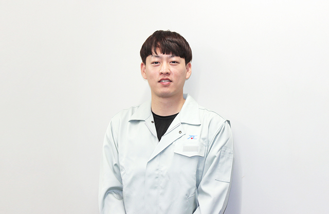
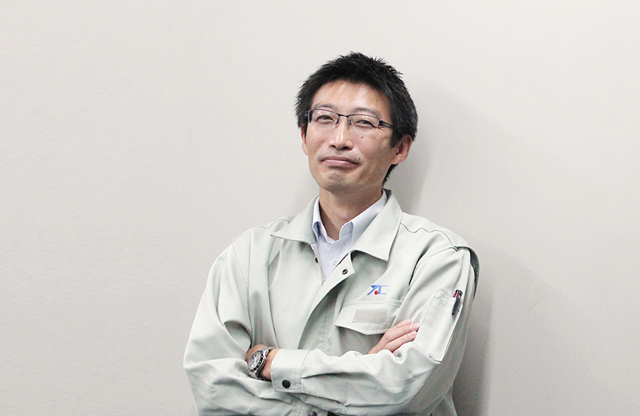
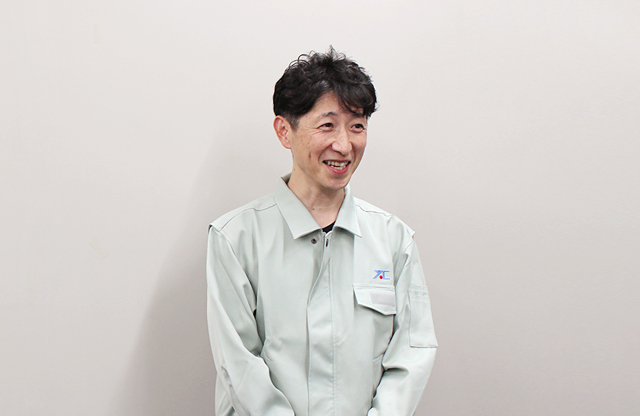

Y.A.C. GROUP / RECRUITING
採用情報
DISCOVER YAC
ワイエイシイを知る
OUR WORK
仕事を知る
ひとつの装置は、いくつもの専門性から生まれる。
自分の関心に合う仕事と、そのつながりを探してみませんか。
01設計
職種の役割とつながりを見る機械・電気・ソフトウェアの知識で、装置の構造と動きをつくる。
02開発新しい加工方法や装置を考え、試験と改良を重ねる。
03生産技術・調達図面を製品へ変える工程と、品質を支える部品供給を整える。
04営業・サービス顧客の課題を捉え、提案から納入後の支援までつなぐ。
05管理・コーポレート人事・経理・情報システムなどの専門性で事業運営を支える。
PEOPLE & STORIES
社員紹介
公式社員記事から紹介しています。所属・仕事内容は記事掲載時点の情報です。

01ワイエイシイデンコー 掲載時点
S. S.
装置全体を知り、制御の技術を磨く。
技術２部 電気設計課

02ワイエイシイデンコー 掲載時点
T. T.
アイデアを、社会を支える装置へ。
技術部

03旧ワイエイシイマシナリー 掲載時点
H. K.
現場の課題を、新しい装置の発想へ。
開発技術部 開発技術課
GROW WITH YAC
働く環境・成長支援
01
基礎をつくる
合同研修やOJTを通して、仕事の土台を育てる。
02
専門性を深める
実務と研修を重ね、自分の得意を磨く。
03
長く働く視点で
勤務地や制度を、応募先の条件で確認する。
RECRUITING GUIDE
募集・選考案内
QUESTIONS & ANSWERS
よくあるご質問
新卒採用はどう応募しますか？
公式窓口からエントリーすると、説明会の案内を受けられます。新卒採用の流れを見る →
キャリア採用はどこで確認できますか？
公式の職種別情報で業務・要件を確認し、受付状況と応募方法を採用担当へご確認ください。掲載職種を見る →
勤務地や配属の希望は伝えられますか？
公式FAQでは、選考前に希望を確認すると案内されています。最終的な配属は適性や事業部門の状況を含めて判断される場合があります。